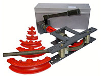

Трубогиб ТПГ-1Б, ТПГ-1,25Б, ТПГ-2Б, ТПГ-3Б
Трубогибы ТПГ-1Б, ТПГ-1,25Б, ТПГ-2Б, ТПГ-3Б - это ручные гидравлические трубогибы, предназначенные для гибки водогазопроводных труб.
Применение трубогибов ТПГ позволяет производить изгиб труб непосредственно на месте монтажа. Конструктивно трубогиб ТПГ состоит из гидроцилиндра, заполненного маслом, траверс и упоров.
Трубогиб ТПГ комплектуется гибочными шаблонами для каждого диаметра трубы.
Трубогибы ТПГ: технические характеристики
| Марка | Усилие, тн | Количество башмаков |
Диаметры труб | Масса, кг | Цена трубогиба |
|---|---|---|---|---|---|
| Трубогиб ТПГ-1Б | 4,5 | 4 | 3/8 - 1" | 16 | 18 740.00 |
| Трубогиб ТПГ-1,25Б | 5 | 5 | 3/8 - 1.1/4" | 22 | 21 370.00 |
| Трубогиб ТПГ-2Б | 10 | 7 | 3/8 - 2" | 54 | 32 980.00 |
| Трубогиб ТПГ-3Б (до 2,5") | 16 | 8 | 3/8 - 2.1/2" | 72 | 39 270.00 |
| Трубогиб ТПГ-3Б | 16 | 9 | 3/8 - 3" | 95 | 43 650.00 |
Чтобы приобрести Трубогиб ТПГ или за дополнительной информацией обращайтесь по телефону (495) 745-60-52 или электронной почте 7456052@mail.ru